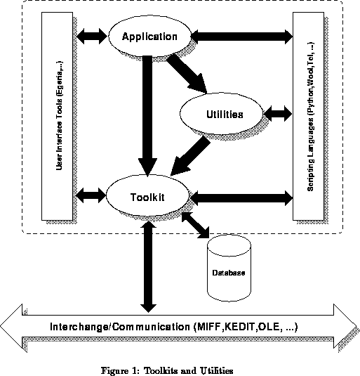

The full MADE environment contains a large number of different objects and related services. Two important categories of these objects have a major role in the development environment; these are: toolkits and utilities. (Note that the object-oriented nature of MADE makes it possible for the end-user to add new objects to both toolkits and utilities and/or to extend the functional capability of existing ones.)
The toolkit level is a collection of objects that are considered to be fundamental for multimedia programming. It includes, obviously, objects to interface different media. Also, it includes objects which, although not directly involved in handling specific media, play a fundamental role in constructing more complex multimedia applications. Some more details of the toolkit level will be given below (see §3).
Although it is possible to construct complex applications using the MADE toolkit level only, doing that may be unnecessarily tedious and error-prone. Consequently, another layer has been defined on top of the MADE toolkit, called utilities. The idea here is to define and implement objects which include complex functionality and which are considered to be essential for most multimedia applications. Applications programmers may choose to use some of these utility objects; however, the toolkit level is never completely obscured, and the application layer is free to use toolkit objects directly as well (see also Figure 1; some of the terms appearing on the Figure will be described in later sections).

In the early stage of the MADE project a common object model was defined and developed, to ensure the smooth cooperation among objects within the MADE library and also to provide a clear approach to some of the technical issues raised by multimedia programming in general. This object model defines a conceptual layer on the top of the implementation language of MADE (ie, C++), and it describes numerous features of objects within MADE. As far as the application programmer is concerned, two characteristics of this model are of a great importance: the use of active objects and the presence of delegation.
In MADE, objects may be active, ie, they may have their own thread of control (within the shared address space of the same UNIX, MS-DOS, or Windows-NT process). This fact is exploited in the implementation of the MADE toolkit library, and is a major tool used in defining synchronization of different media (see §3.2.3 below). Application programmers may have to be aware of this fact if they decide to use the toolkit level objects directly.
The concept of delegation of object methods is the other central feature of the MADE object model. Using delegation an object may delegate some or all of its behaviour (i.e., the messages it serves) to any number of other objects, which will then act on its behalf. The notion is not unlike inheritance, but delegation is dynamic, ie, the target of delegation may be set and re-set at run-time. Delegation plays a very important role in controlling constraints in MADE (constraint objects are part of the toolkit), and offers advanced means to describe temporal behavioural control. A more exact semantics of delegation is described in, eg, [20]; see also [1] for a more detailed description of the concept within the framework of the MADE object model.
The object model has been realized in the form of an extension of C++, called mC++. The mC++ compiler generates a set of C++ classes, library and macro calls; this ``intermediate'' level can also be accessed by programmers directly, in case they do not intend to use yet another programming language (see [17]). Details of the object model are, however, hidden to most application programmers and are only of real interest for toolkit or utility developers. The full technical description of this object model will be omitted here; the interested reader should refer to [1] for a general overview and to [2] for a complete description of the model and of mC++.
The object model is not the only means to achieve smooth cooperation among objects. All MADE objects also include general features that allow them to be used under various circumstances in a unified way. Some examples of these features, which are necessary to understand what is described in later sections, are given below.
All objects in the MADE system may be permanent. This means that they may ``store'' themselves in a database and can restore their content at a later stage of the application's lifetime or even during the execution of some other applications. This feature is present for all MADE objects by default; the only step the application program has to do is to invoke certain implicitly defined member functions. Furthermore, the MADE toolkit level includes a special object which can interface with various database systems. Although this interface obviously cannot cover all known database systems, it does provide an interface to some object-oriented and relational databases. Here again, the general features required by the database access is included in all MADE objects in a database-independent way, and the details of the database access is hidden in the general database management object of MADE (see [29]); interfacing to a new database system means the specification of an appropriate sub-class.
MADE objects, primarily utility objects, are also prepared for
distributed access. This not only means that the MADE library
includes specific objects for inter-process communication, but also
that MADE objects are prepared to ``convert themselves'' into a
format suitable for communication and, conversely, can ``reconstruct''
their internal state based on data coming from a communication channel.
A sophisticated object-oriented communication protocol (called
KEDIT[18]) is currently under development for
UNIX platforms, which will allow MADE applications to offer
object-based services, and will provide means for the transfer of full
MADE objects from one MADE application to another. The features
offered by the combination of MADE objects and KEDIT are similar
to the kind of object services defined by the Object Management
Group .
On MS-DOS and Windows-NT platforms the OLE protocol will be used
to provide similar facilities; this is already a de-facto standard on
these environments.
.
On MS-DOS and Windows-NT platforms the OLE protocol will be used
to provide similar facilities; this is already a de-facto standard on
these environments.
All MADE objects include a general mechanism known as a ``dynamic call interface''. This interface makes it possible to call a member function of an object by knowing the object's handle and a string describing the full signature of the member function. This string can be constructed at run-time, hence the ``dynamic'' nature of the call. This feature permits MADE objects to be accessed easily from scripting languages, and provides a simple way of constructing interfaces to other programming languages (eg, C or Fortran). It also makes the implementation of distribution support (like KEDIT) fast and easy.